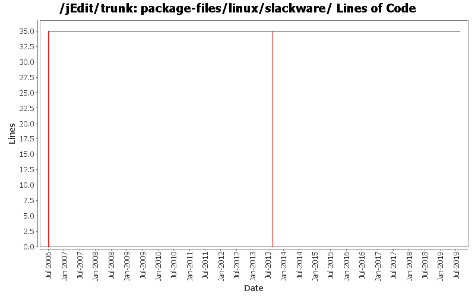

[root]/package-files/linux/slackware

| Author | Changes | Lines of Code | Lines per Change |
|---|---|---|---|
| Totals | 23 (100.0%) | 81 (100.0%) | 3.5 |
| Vampire0 | 21 (91.3%) | 79 (97.5%) | 3.7 |
| ezust | 2 (8.7%) | 2 (2.5%) | 1.0 |
Add missing Java 11 changes
0 lines of code changed in 1 file:
some cleanup and fixes in build.xml and package-files
1 lines of code changed in 1 file:
reinstantiate trunk and branches
35 lines of code changed in 4 files:
put tombstone in place, official repository for jEdit core is now in Git
0 lines of code changed in 4 files:
Moved slackware crap out of build.xml
clarified where the wrap long lines action is in the shortcut option pane.
2 lines of code changed in 2 files:
apply downstream patch from https://code.launchpad.net/~mborn319/ubuntu/precise/jedit/add_keywords/+merge/96188 that adds searchable keywords to linux .desktop files
0 lines of code changed in 1 file:
Little fix in slackware package installation script
2 lines of code changed in 1 file:
a test of changed property
4 lines of code changed in 4 files:
Some cleanup and fix
2 lines of code changed in 1 file:
- Great rewrite of build.xml with many additions like automated building of various distribution files
- moved build-support to core
- made the standard plugins use build-support
35 lines of code changed in 4 files: